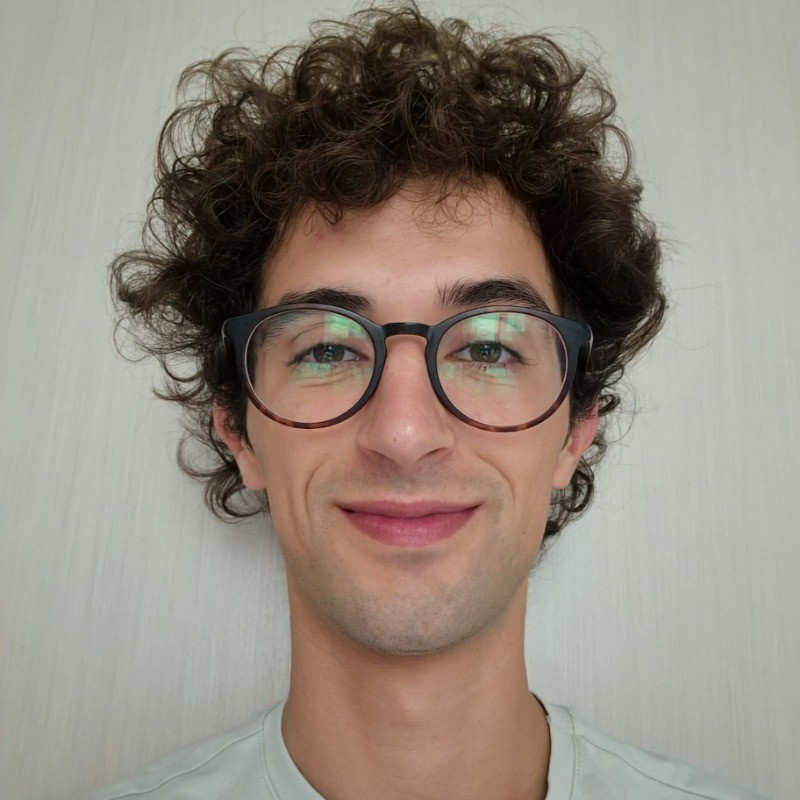

Tracing how disinformation moves through language.
I develop multilingual NLP methods for detecting conspiracy narratives, and interpret the results within a social-science framework.

About
I'm a PhD Candidate in the MSCA HYBRIDS project at Universidade de Évora, working at the intersection of Natural Language Processing and social science to understand disinformation.
I hold degrees in Communication Sciences and Sociology & Social Research (cum laude), grounding my technical work in Python, NLP, and machine learning with a social-scientific reading of the phenomena I study.
Italian (native) · English (C1) · Spanish (C1) · French (B2) · Portuguese (B1)
Education
Natural Language Processing with Deep Learning
Transformer architectures and deep learning for NLU.
PhD Candidate, HYBRIDS DC4
Detection of population-replacement conspiracy theories in Portugal and Italy. Supervised by Dr. Renata Vieira (NLP) and Dr. Ana Sofia Ribeiro (History).
MSc Sociology and Social Research — 110 cum laude
Computational Social Sciences track; thesis on Telegram network analysis. Erasmus at Université Côte d'Azur (2022).
BA Communication Sciences
Media studies and digital communication theory. Erasmus at Universidad de Huelva (2019).
Experience
Visiting Researcher
Second PhD secondment: evaluation and validation of the HYBRIDS NLP framework.
Visiting Researcher
Fine-tuning models for misinformation and hate-speech detection; Telegram dataset work with Katarina Laken (DC5).
Visiting Researcher
Computational analysis of Italian political discourse and migration narratives.
Visiting Researcher
PhD secondment and training in NLP and political science methodology.
PhD Candidate — HYBRIDS Project
Datasets of Portuguese and Italian political and media discourse from the 1990s to present.